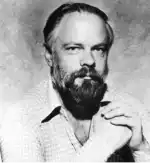
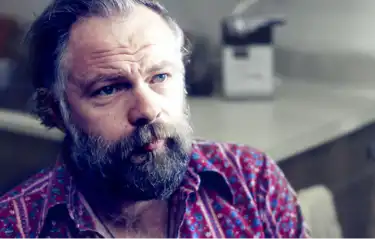

Philip Kindred Dick est un écrivain américain. Il
appartient au mouvement du post-modernisme.
Durant sa carrière il va s’orienter vers le genre
fantastique et la science fiction.

« In my writing I even question the universe; I wonder out loud if it is
real, and I wonder out loud if all of us are real. »
Quelques informations sur sa vie
Alors qu’il n’était âgé que de quelques semaines
Philip perd sa soeur jumelle. À ses 4 ans ses
parents se séparent et son père mets à terme
tout relation.
Dès petit il est passionné de littérature et de
musique.
Il décide donc plus tard de faire de la littérature
son métier. Il va se tourner vers la science-fiction
et le fantastique.
Paranoïaque et schizophrène, il consomme des
amphétamines pour rester productif.
Cependant, son succès est incontestable. Il
reçoit plusieurs prix littéraires au cours de sa vie.
Par exemple le prix Hugo ou encore le prix John
Wood Campbell Memorial.
Il avait son propre style d’écriture et a influencé
pleins de personnes. Il a notamment influencé
Charlie Kaufman (scénariste qui a beaucoup
travaillé avec Spike Jonze).
Beaucoup de ses oeuvres seront adaptées au
cinéma et seront populaires. Par exemple Blade
Runner, Passenger, Total Recall ou encore Ghost
in the Shell qui s’est inspiré de sa philosophie.
Aujourd’hui décédé, ses oeuvres continuent à
faire parler de lui.
Grand écrivain, le prix littéraire Philip K Dick a été
créé pour lui rendre hommage.

Philip K. Dick - BBC Radio 4
Quelques livres dont il est l’auteur
Le Maître du Haut Château (1962)
Adaptation : The Man in the High Castle
Le Dieu venu du Centaure (1965)
Les androïdes rêvent-ils de moutons électriques ? (1968)
Adaptation : Blade Runner
Ubik (1969)
SIVA (1981)